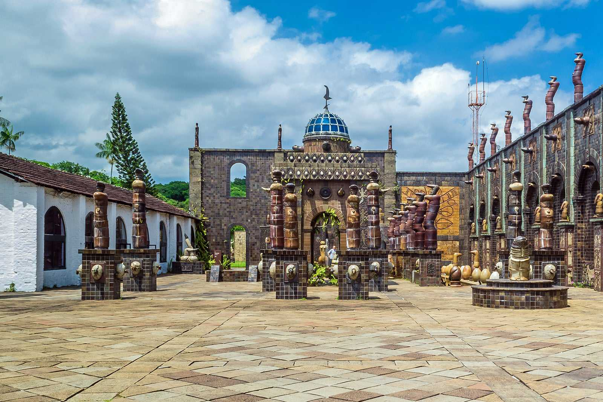

O Parque das Esculturas de Recife
Informações
O Parque das Esculturas Francisco Brennand é um museu de arte a céu aberto localizado na cidade do Recife, capital do estado brasileiro de Pernambuco. Constitui um dos principais feitos do artista plástico pernambucano Francisco Brennand.
Idealizado na década de 1990 como parte do projeto “Eu vi o mundo… Ele Começava no Recife” para comemoração dos 500 anos do descobrimento do Brasil, o parque foi inaugurado em 29 de dezembro 2000.
Existem mais de 100 esculturas criadas por Francisco Brennand, sendo a principal obra no complexo a Torre de Cristal, com 32 metros de altura e confeccionada em argila e bronze.

Oficina de Cerâmica Francisco Brennand de Recife
Informações
Um passeio altamente recomendado é uma visita até a Oficina de Cerâmica Francisco Brennand, que pertence ao próprio artista. O local foi transformado por ele em um museu a céu aberto, tem espaços para a exposição de suas obras e é a oficina de produção de uma das melhores cerâmicas do país.
Ainda com a chancela da família Brennand, o Instituto Ricardo Brennand é outra excelente alternativa para visitantes de todas as idades que apreciam arte, arquitetura e história. O acervo inclui exposições permanentes e temporárias de artistas nacionais e internacionais e um arsenal de armas, armaduras, tapetes e quadros da era medieval.